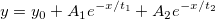

2つのモデルを比較する（OriginProのみ）
PostFit-CompareFitFunc-Dialog
このツールは異なる2つのフィット関数を使って同じデータセットをフィットした結果を比較するために使用します。これには、パラメータ共有の有無にかかわらず、複数のデータセットが同時にフィットされるグローバルフィット操作の結果が含まれます（OriginPro 2017以降で利用可能）。
どのモデルが最適か比較するのに3つの検定、F-検定、赤池情報量基準(AIC)、ベイズ情報量基準(BIC)を使う事ができます。
このツールを使うには
- 同じデータに対して別々のフィット関数を使いフィットを2回実行して、2つのフィットレポートを出力します。
- Originのメニューから、解析：フィット：モデルの比較を選択します。

|
サンプル:
あるデータセットがもっともよくフィットするモデルを探したいとします。
比較の候補モデルは次の通りです。
ExpDec1: 
ExpDec2: 
ステップ：
1. \Samples\Curve FittingフォルダのExponential Growth.datをインポートします。
2.Col(B)を選択して、解析：フィット：非線形曲線フィットを選択してダイアログを開きます。関数としてExpDec1を選択します。フィットをクリックして結果シートを取得します。
3.非線形曲線フィットダイアログを再度開き、今度は関数をExpDec2にします。フィットをクリックして結果シートを取得します。
4.解析：フィット：モデルの比較を選択してダイアログを開きます。
5.フィット結果1の参照ボタンをクリックしてレポートツリーブラウザを開き、1つのレポートを選択します。
6.同様にしてフィット結果2でもう一方のレポートを選択します。
7. 全てのオプションを選択してOKをクリックします。
8.F検定の表とAIC結果表から、ExpDec1関数がよくフィットするモデルであると結論付けることができます。
|
ダイアログの設定
再計算
入力データに何らかの変更があった場合の結果の再計算と更新方法を指定します。
| なし
|
元データと結果が結びつかず、元データを変更しても出力結果は更新されません。
|
| 自動
|
元データを変更すると、出力結果は自動的に更新されます。
|
| 手動
|
元データを変更しても出力結果が自動で更新されません。 手動でアップデートを開始する必要があります。
|
フィット結果1
1つ目のフィット結果を指定します。フィット結果1ボックスの右にあるレポートツリーブラウザボタン をクリックすると、レポートツリーブラウザダイアログに全てのフィットレポートが表示されます。レポートツリーブラウザダイアログでフィットレポートを選択してフィット結果1として設定します。
をクリックすると、レポートツリーブラウザダイアログに全てのフィットレポートが表示されます。レポートツリーブラウザダイアログでフィットレポートを選択してフィット結果1として設定します。
フィット結果2
2つ目のフィット結果を指定します。フィット結果2ボックスの右にあるレポートツリーブラウザボタンをクリックすると、フィット結果1で指定と同じフィットデータを使ったフィットレポートだけがレポートツリーブラウザダイアログに表示されます。レポートツリーブラウザダイアログでフィットレポートを選択してフィット結果2として設定します。
Origin は、Levenberg/Marquardt (L-M) アルゴリズムを使用したフィット結果と直交距離回帰 (ODR) アルゴリズムを使用したフィット結果の比較はサポートしていないので注意してください。たとえば、フィット結果1がL-M アルゴリズムを使用する陽関数である場合、同じデータに対する (ODR を使用する) 陰関数のフィット結果は、フィット結果2のレポートツリーブラウザダイアログで表示されません。
比較法
どちらのフィット関数が良いかを判断する方法を指定します。
| AIC(赤池情報量規準)
|
AIC(赤池情報量規準)検定を使用して比較します。
|
| BIC(ベイズ情報量基準)
|
BIC(ベイズ情報量基準)検定を使用して比較します。
|
| F検定
|
F検定を使用して比較します。チェックを付けると有意水準ボックスが表示されます。
|
| 有意水準
|
デフォルトは0.05 です。0 から 1 の値を指定可能です。
|
その他の出力
フィット表を出力するか指定します。
| フィットパラメータ
|
各フィットモデルに対するフィットパラメータ表を出力するか指定します。
|
| フィット統計
|
各フィットモデルに対するフィット統計表を出力するか指定します。
|
| 第1モデル名
|
結果シートで最初に表示されるフィット結果1にあたるモデル名を指定します。デフォルト名はModel 1です。
|
| 第2モデル名
|
結果シートで最初に表示されるフィット結果2にあたるモデル名を指定します。デフォルト名はModel 2です。
|
結果
比較結果の出力レポートワークシートを指定します。
出力結果を参照してください。